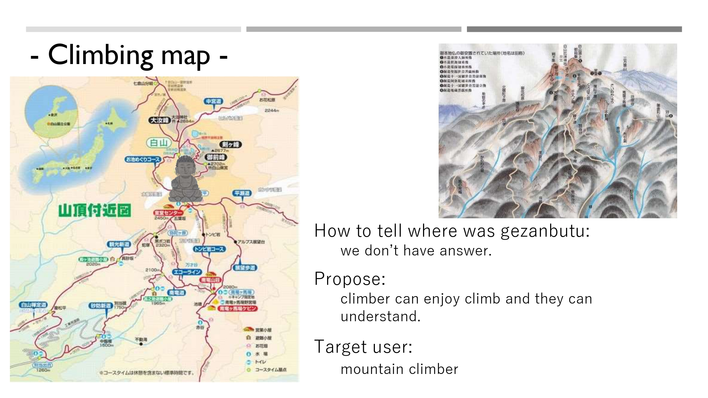

Map
We are making map that indicate the place of budda. The name of budda is colled "Gezanbutsu". Our information are from interviewee who know very much about budda, For example, temple priest and city officer.
We are making map that indicate the place of budda. The name of budda is colled "Gezanbutsu". Our information are from interviewee who know very much about budda, For example, temple priest and city officer.
We tried to make budda statue which have QR code. If you scan Qr code, you can go to website of Gezanbutsu.
We tried to make event which ends in a day.
we tried to make a toy that you can know information of Gezanbutsu.